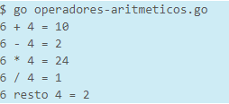

Expresiones... ¿Que son?
Una expresión se refiere a la transcripción de una o varias operaciones mediante código, utilizando para ello operadores, variables, constantes, valores, etc. Para que un operador aritmético pueda desempeñar su función, es necesario expresar la operación de la siguiente manera:
- operando1 operador operando2
Los operandos son los valores que intervienen en la operación. Pueden ser valores directos, variables o constantes.
Un ejemplo sencillo:
En el siguiente ejemplo se puede ver de forma clara el uso de los operadores aritméticos y de las expresiones, las cuales realizarán el calculo determinado por el operador, y el resultado se asignará a una variable.
Como resultado se obtendra lo siguiente

Precedencia de los operadores
Al escribir operaciones más complejas en las que se desarrollan varias operaciones, el orden de precedencia sera siempre de izquierda a derecha
- fmt.Println("4 + 3 - 1 = ", 4+3-1)
En este caso, primero se sumarán 4 y 3 (7), y después se restará 1, dando como resultado el valor 6.
Sin embargo, según el operador, la precedencia cambia. Por ejemplo:
- fmt.Println("4 + 2 * 6 - 8 / 2 + 4 % 2 = ", 4+2*6-8/2+4%2)
daría como resultado 12
En esta expresión tan larga, primero se calcularían las expresiones con el operador de mayor peso, y después, con los resultados, se calcularían las expresiones de menor peso, siempre de izquierda a derecha.
Como ya sabemos, los operadores de mayor peso son la multiplicación, la división y el resto. Los operadores de menor peso serían la suma y la resta.
Por tanto, en el ejemplo anterior se calcularían primero, de izquierda a derecha, las operaciones de mayor peso. Una vez calculadas, de izquierda a derecha, se calcularían las operaciones de menor peso.
- 4 + [2 * 6] - [8 / 2] + [4 % 2]
- 4 + 12 - 4 + 0
- 12
Se han marcado entre corchetes las operaciones con mayor peso para una mejor identificación de como se realizan los calculos
La precedencia de los parentesis
Los paréntesis permiten cambiar la precedencia de los operadores, obteniendo el mayor peso en la precedencia. Por tanto, primero se calculan los paréntesis, después la multiplicación, división o resto, y, por último, la suma o la resta.
- fmt.Println("(4 + 2) * (6 - 8) / 2 + 4 = ", (4+2)*(6-8)/2+4)
El resultado de la expresión anterior será -2. El orden de las operaciones es el siguiente:
- (4 + 2) * (6 - 8) / 2 + 4
- (6) * (-2) / 2 + 4
- -12 / 2 + 4
- -6 + 4
- -2
El paréntesis no tiene por qué englobar sólo una operación. Puede tener las operaciones que sean necesarias, e incluso englobar entre paréntesis operaciones dentro de otra operación englobada por paréntesis. Aquí el orden de precedencia serían desde los paréntesis más profundos hasta los más externos. Como por ejemplo
- fmt.Println("(4 + 2) * ((6 - 8 / 2) + 4) = ", (4+2)*((6-8/2)+4))
El orden de las operaciones termina quedando asi:
- (4 + 2) * ((6 - 8 / 2) + 4)
- (4 + 2) * ((6 - [8 / 2]) + 4)
- (4 + 2) * ((6 - 4) + 4)
- (4 + 2) * (2 + 4)
- (6) * (6)
- 36